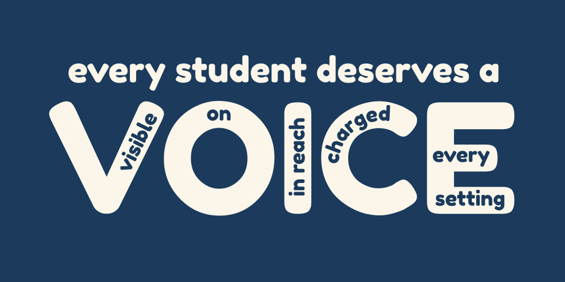
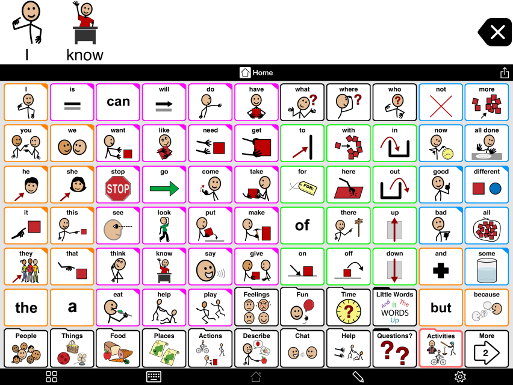
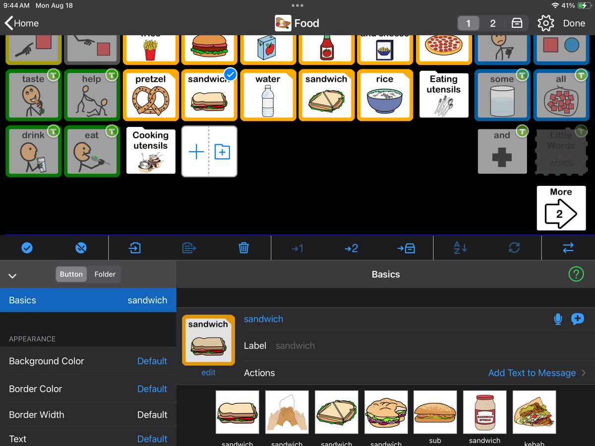

AAC (Augmentative and Alternative Communication) is any way of communicating that adds to or takes the place of speech. It gives a person a way to request, refuse, comment, ask questions, share opinions, and speak up for themselves. Wants and needs are only the starting point.
The VOICE check
A device that is dead, in a backpack, or left in another room means the person has lost their voice for that moment. Run this quick check often.

- VVisibleOut where everyone can see it, not in a backpack or drawer.
- OOnPowered on, open to Proloquo2Go, and the volume turned up.
- IIn reachWithin arm's reach all day, including meals and car rides.
- CChargedCharge it every night. Bring a portable battery on outings.
- EEvery settingIt goes to the job site, the community, the classroom, and home.
When to check: when you arrive, at every change in activity, and before leaving the house or heading to a job site or outing.
Modeling: use the device when you talk
People learn language by seeing and hearing it used many, many times. AAC users need to see us use their system the same way. This is called modeling, or aided language input.
Talk and tap
Say the whole sentence out loud and tap the key words on the device as you say them.
One step ahead
Model one or two words more than the person uses now. If they use one word, model two.
No pressure
Never require them to copy you. Modeling is showing, not testing.
Wait
Pause 5 to 10 seconds after you ask or model. Count in your head. Silence is thinking time.
Notice
Watch for every attempt: a tap, a look, a sign, a sound, a gesture.
Respond
Treat every message as meaningful, even if it seems off topic. If they say "stop," honor it when it is safe.
Words to model
These core words make up most of what people say every day and work in every setting. Pick one or two as a "word of the week" and use them everywhere.
Border colors match the colors on the Proloquo2Go home screen.
What modeling looks like in every setting
Highlighted words are the ones to tap on the device while you talk. These fit into routines you already do.
Job site
- "You are all done. Time to go to break."
- "I need help with this box."
- "Put the gloves on."
- "What do we do next?"
Community
- "I want to pay."
- "Where is the bus?"
- "That one is different."
- "I like this store."
Classroom
- "I think this one is good."
- "What do you think?"
- "Look at this."
- "Not that one."
Home
- "Dinner is ready. Do you want more?"
- "Who is coming here?"
- "Let's go to the store."
- "Turn it off. All done with TV."
Proloquo2Go how-to
Quick steps for the things families and staff ask about most. Tap a heading to open it. Before changing anything, check with your team's editing point person.


Find a word
- Start from Home. If you get lost, tap Home.
- Use search to find a word. It shows the path to the button so you can learn where it lives.
- Use the keyboard for names and words that are not on the device yet.
Change a button
- Tap the pencil in the bottom toolbar to open edit mode. Enter the passcode if editing is locked.
- Tap the button you want to change. It gets a blue check.
- Change the label (what you see) or the message (what it says).
- Pick a new symbol, or take a photo of the real item or place.
- Tap Done at the top right to save and leave edit mode.
Add a new word
- Open the folder where the word belongs, then open edit mode.
- Tap the empty + space to add a button (or a folder).
- Add a label, message, and picture. Real photos work well for job sites, coworkers, and places in town.
- Tap Done. Let the rest of the team know so everyone can model it.
Hide a word instead of deleting it
Hidden buttons keep their spot on the grid, so the layout the person has learned stays the same. In edit mode a hidden button looks faded. It can be shown again later. Deleting can shift buttons and break motor memory, so hide instead.
Keep the person in the app (Guided Access)
- On the iPad, open Settings, then Accessibility, then Guided Access, and turn it on. Set a passcode.
- Open Proloquo2Go and triple-click the side (or Home) button to start Guided Access.
- Triple-click again and enter the passcode to end it.
Back up the vocabulary
Ask your team's editing point person how backups are handled for this device. A current backup protects every word that has been added if the iPad is lost, broken, or reset.
Proloquo2Go how-to videos
Short videos that walk through the editing basics. Tap any one to watch.
Want a copy for the fridge or the classroom? Print the Basics for Proloquo2Go QR sheet. Each QR code on it opens one of these videos.
Printable core boards
A paper board is the backup for when the iPad is charging, at the pool, or out of reach. Keep one at home and one in the classroom. These match the words and colors on the device.
Proloquo2Go core word board
The core words from Proloquo2Go on one page, with an alphabet. Free from AssistiveWare.
Open PDFCrescendo quick communication boards
Core words plus topic boards like Food, Places, Feelings, and Help, with spaces to add your own words.
Open PDFMore boards, including Spanish versions, are on AssistiveWare's core word board page.
What helps and what gets in the way
Do
- Speak to the person as an adult
- Keep the device within reach all day
- Accept speech, signs, gestures, and AAC
- Create real reasons to communicate
- Tell the team about words that are missing
Avoid
- Taking the device away as a consequence
- Quizzing ("Show me ___")
- Speaking for them when they can respond
- Moving or deleting buttons
- Saving the device for "speech time" only
Myths and facts
Free resources
- Proloquo2Go supportAssistiveWare's how-to articles and videos for every part of the app.
- Learn AAC (AssistiveWare)Short, free articles for families and staff on modeling and getting started.
- PrAACtical AACPractical strategies and activity ideas for supporting AAC users.
- Project CoreFree professional development modules on core vocabulary and modeling.
- ASHA: What is AAC?A plain-language overview from the American Speech-Language-Hearing Association.
- Communication Bill of RightsThe basic communication rights every person has, from the National Joint Committee.